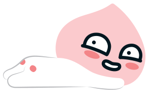
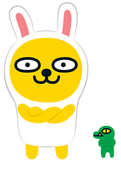
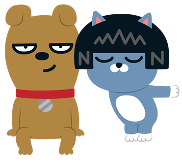
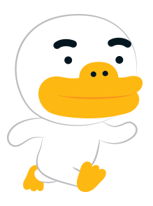

라이언
갈기가 없는 것이 콤플렉스인 수사자
큰 덩치와 무뚝뚝한 표정으로 오해를 많이 사지만, 사실 누구보다도 여리고 섬세한 소녀감성을 지닌 반전 매력의 소유자! 원래 아프리카 둥둥섬 왕위 계승자였으나, 자유로운 삶을 동경해 탈출! 카카오프렌즈의 든든한 조언자 역할을 맡고 있습니다. 꼬리가 길면 잡히기 때문에, 꼬리가 짧습니다.
라이언
갈기가 없는 것이 콤플렉스인 수사자
큰 덩치와 무뚝뚝한 표정으로 오해를 많이 사지만, 사실 누구보다도 여리고 섬세한 소녀감성을 지닌 반전 매력의 소유자! 원래 아프리카 둥둥섬 왕위 계승자였으나, 자유로운 삶을 동경해 탈출! 카카오프렌즈의 든든한 조언자 역할을 맡고 있습니다. 꼬리가 길면 잡히기 때문에, 꼬리가 짧습니다.
어피치
복숭아 나무에서 탈출한 악동 복숭아
유전자 변이로 자웅동주가 된 것을 알고 복숭아 나무에서 탈출한 악동 복숭아 어피치! 섹시한 뒷태로 사람들을 매혹시키며, 성격이 매우 급하고 과격합니다.
무지 & 콘
토끼 옷을 입은 단무지인 무지와 정체불명 콘
호기심 많은 장난꾸러기 무지의 정체는 사실 토끼 옷을 입은 단무지! 토끼 옷을 벗으면 부끄러움을 많이 탑니다. 단무지를 키워 무지를 만든 정체불명의 악어 콘! 이제는 복숭아를 키우고 싶어 어피치를 찾아 다닙니다.
프로도 & 네오
부잣집 도시개 프로도와 패셔니스타 네오
프로도와 네오는 카카오프렌즈 공식 커플로 알콩달콩 깨볶는 중! 부잣집 도시개 프로도는 사실 잡종. 태생에 대한 콤플렉스가 많습니다. 자기 자신을 가장 사랑하는 새침한 고양이 네오. 쇼핑을 좋아하는 이 구역의 대표 패셔니스타입니다. 하지만 도도한 자신감의 근원이 단발머리 ‘가발’에서 나온다는 건 비밀!
튜브
겁 많고 마음 약한 오리 튜브
겁 많고 마음 약한 오리 튜브는 극도의 공포를 느끼면 미친 오리로 변신합니다. 작은 발이 콤플렉스이기 때문에 큰 오리발을 착용합니다. 미운 오리 새끼가 먼 친척입니다.
제이지
힙합을 사랑하는 자유로운 영혼
땅속 나라 고향에 대한 향수병이 있는 비밀요원 제이지! 사명의식이 투철하여 냉철해보이고 싶으나, 실은 어리버리합니다. 겉모습과 달리 알고보면 외로움을 많이 타는 여린 감수성의 소유자. 힙합 가수 Jay-Z의 열혈팬입니다.